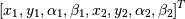

LaviRot.rotor.Rotor(shaft_elements, disk_elements, bearing_seal_elements, w=0)[source]¶A rotor object.
This class will create a rotor with the shaft, disk and bearing elements provided.
| Parameters: | shaft_elements: list
disk_elements: list
bearing_elements: list
w: float, optional
|
|---|---|
| Returns: | A rotor object. |
Examples
>>> # Rotor without damping with 2 shaft elements 1 disk and 2 bearings
>>> n = 1
>>> z = 0
>>> le = 0.25
>>> i_d = 0
>>> o_d = 0.05
>>> E = 211e9
>>> G = 81.2e9
>>> rho = 7810
>>> tim0 = ShaftElement(0, le, i_d, o_d, E, G, rho,
... shear_effects=True,
... rotary_inertia=True,
... gyroscopic=True)
>>> tim1 = ShaftElement(1, le, i_d, o_d, E, G, rho,
... shear_effects=True,
... rotary_inertia=True,
... gyroscopic=True)
>>> shaft_elm = [tim0, tim1]
>>> disk0 = DiskElement(1, rho, 0.07, 0.05, 0.28)
>>> stf = 1e6
>>> bearing0 = BearingElement(0, stf, stf, 0, 0)
>>> bearing1 = BearingElement(2, stf, stf, 0, 0)
>>> rotor = Rotor(shaft_elm, [disk0], [bearing0, bearing1])
>>> rotor.wd[0]
34.2773...
Attributes
| evalues | (array) Rotor’s eigenvalues. |
| evectors | (array) Rotor’s eigenvectors. |
| wn | (array) Rotor’s natural frequencies in Hz. |
| wd | (array) Rotor’s damped natural frequencies in Hz. |
Methods
A(w=0)[source]¶State space matrix for an instance of a rotor.
| Returns: | State space matrix for the rotor. |
|---|
Examples
>>> rotor = rotor_example()
>>> rotor.A()[12:16, :2]
array([[ 2.06299048e+08, -0.00000000e+00],
[ -0.00000000e+00, 2.06299048e+08],
[ 0.00000000e+00, 6.97351178e+09],
[ -6.97351178e+09, -0.00000000e+00]])
C()[source]¶Damping matrix for an instance of a rotor.
| Returns: | Damping matrix for the rotor. |
|---|
Examples
>>> rotor = rotor_example()
>>> rotor.C()[:4, :4]
array([[ 0., 0., 0., 0.],
[ 0., 0., 0., 0.],
[ 0., 0., 0., 0.],
[ 0., 0., 0., 0.]])
G()[source]¶Gyroscopic matrix for an instance of a rotor.
| Returns: | Gyroscopic matrix for the rotor. |
|---|
Examples
>>> rotor = rotor_example()
>>> rotor.G()[:4, :4]
array([[ 0. , -0.01943344, -0.00022681, 0. ],
[-0.01943344, 0. , 0. , -0.00022681],
[ 0.00022681, 0. , 0. , 0.0001524 ],
[ 0. , 0.00022681, -0.0001524 , 0. ]])
K()[source]¶Stiffness matrix for an instance of a rotor.
| Returns: | Stiffness matrix for the rotor. |
|---|
Examples
>>> rotor = rotor_example()
>>> rotor.K()[:4, :4]/1e6
array([[ 46.69644273, 0. , 0. , 5.71205534],
[ 0. , 46.69644273, -5.71205534, 0. ],
[ 0. , -5.71205534, 0.97294287, 0. ],
[ 5.71205534, 0. , 0. , 0.97294287]])
M()[source]¶Mass matrix for an instance of a rotor.
| Returns: | Mass matrix for the rotor. |
|---|
Examples
>>> rotor = rotor_example()
>>> rotor.M()[:4, :4]
array([[ 1.42050794, 0. , 0. , 0.04931719],
[ 0. , 1.42050794, -0.04931719, 0. ],
[ 0. , -0.04931719, 0.00231392, 0. ],
[ 0.04931719, 0. , 0. , 0.00231392]])
kappa(node, w, wd=True)[source]¶Calculates kappa for a given node and natural frequency.
w is the the index of the natural frequency of interest

| Parameters: | node: int
w: int
wd: bool
|
|---|---|
| Returns: | kappa: dict
|
Notes
This function calculates the matrix
and the matrix H = T.T^T for a given node. The eigenvalues of H correspond to the minor and major axis of the orbit.
Examples
>>> rotor = rotor_example()
>>> # kappa for each node of the first natural frequency
>>> rotor.kappa_mode(0)
[array(0.00024771356807127144), array(0.00024771356803424013), array(0.00024771356792966965)]
kappa_mode(w)[source]¶This function evaluates kappa given the index of the natural frequency of interest. Values of kappa are evaluated for each node of the corresponding frequency mode.
| Returns: | kappa_mode: list
|
|---|
Examples
>>> rotor = rotor_example()
>>> # kappa for each node of the first natural frequency
>>> rotor.kappa_mode(0)
[array(0.0007921675419146242), array(0.0007921675419032787), array(0.0007921675419138006)]